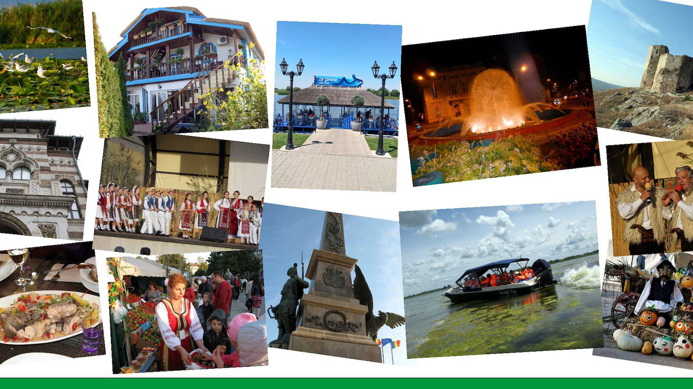

ЮНЕСКО и България
Културно наследство и туристически потенциал
1/10
Какво е ЮНЕСКО?
Специализирана агенция на ООН (основана 1945)
Мисия: опазване на световното културно и природно наследство
България е член от 1956 г.
2/10
Рилски манастир
Вписан в списъка през 1983 г.
Най-големият манастир в България
Уникална възрожденска архитектура
Духовен и културен център
3/10
Боянска църква
Вписана в списъка през 1979 г.
Уникални стенописи от 13 век
Реалистични портрети преди Ренесанса
Изключителна архитектура
4/10
Мадарски конник
Вписан през 1979 г.
Единствен скален релеф от този мащаб в Европа
Височина: 23 метра
Символ на българската държавност
5/10
Старият град Несебър
Вписан през 1983 г.
Над 3000 години история
Съчетание на различни епохи
Уникална църковна архитектура
6/10
Казанлъшка гробница
Вписана през 1979 г.
Датира от 4-3 век пр.н.е.
Забележителни стенописи
Тракийско културно наследство
7/10
Ивановски скални църкви
Вписани през 1979 г.
Средновековен манастирски комплекс
Уникални скални църкви
Забележителни стенописи
8/10
Свещарска гробница
Вписана през 1985 г.
Тракийска царска гробница
Уникална архитектура
Свидетелство за гетската култура
9/10
Нематериално културно наследство
Бистришките баби - многогласно народно пеене
Нестинарството - танци върху жарава
Чипровско килимарство - традиционно занаятчийство

10/10